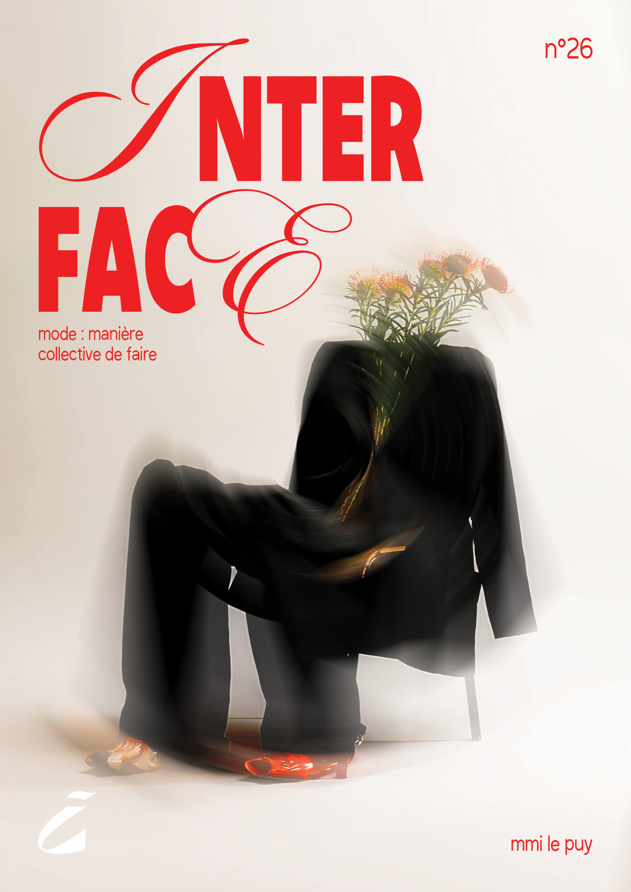
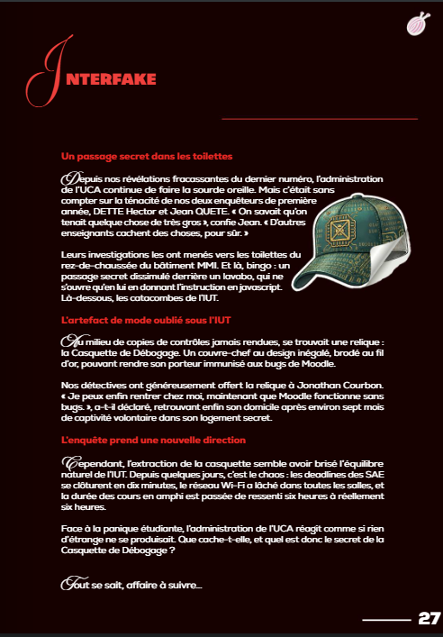
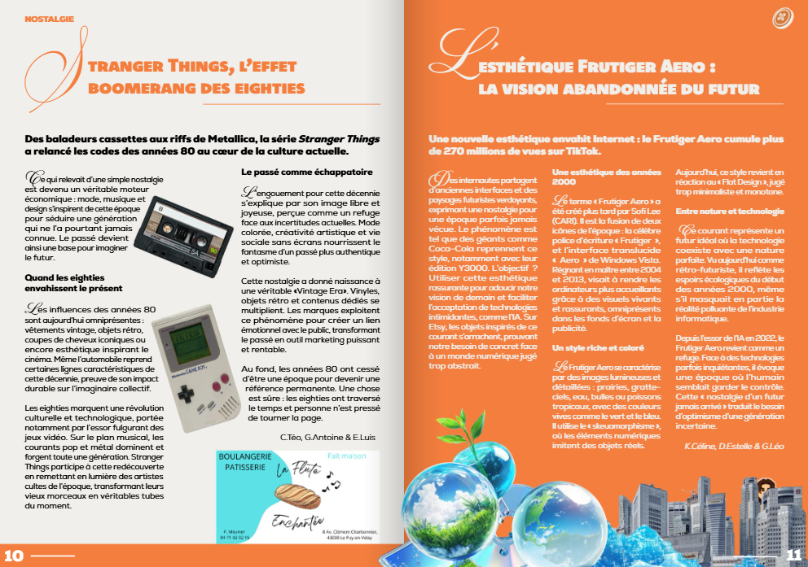

Magazine
Interface.
Concevoir et faire paraître un magazine en équipe, en moins de deux semaines, tout en coordonnant la communication, les sponsors et le planning.
Lire le magazine ↗ Lire mon article ↗- Mon rôle
- Chef de projet
- Commissions
- Sponsors, communication & planification
- Impression
- 700 exemplaires
Un magazine à construire collectivement
Dans le cadre de ce projet étudiant, j’ai occupé le rôle de chef de projet au sein des commissions sponsors, communication et planification. Avec les autres chefs de groupe, j’ai participé aux réunions de coordination pour faire avancer les différents volets et mener le magazine à son terme en moins de deux semaines.
J’ai également contribué à la création de la maquette du magazine et rédigé un article publié sur le site d’Interface. Cette expérience m’a permis de participer à la fois à l’organisation collective du projet, à la fabrication du support éditorial et à la production de contenu destiné au web.
Lire l’article « La Citroën Ami, meilleure copine des ados » ↗
Quelques pages du magazine


Interfake : la fausse info qui assume sa fiction
Interfake est une rubrique imaginée par les étudiants du pôle rédaction. Elle détourne les codes de l’article d’actualité pour inventer une fausse information à but humoristique. Le passage secret dans les toilettes de l’IUT raconté sur cette page est donc une fiction, créée pour faire sourire les lecteurs.
Financer l’impression
La recherche de sponsors devait permettre de financer l’impression et de respecter le budget prévu. Le devis de l’imprimeur s’élevait à 1 024 € pour 700 exemplaires.